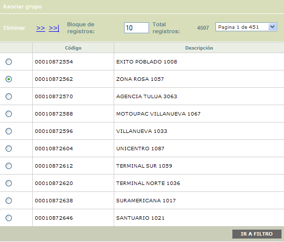
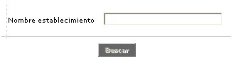
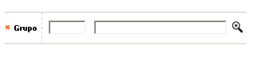

Segmentación de establecimientos |
Mediante esta función se provee una herramienta de mercadeo que permite la segmentación de los comercios, mediante la creación de grupos de información sobre los establecimientos de acuerdo con los criterios de selección que la entidad estime necesarios.
El formulario contiene las opciones Eliminar, Adicionar y Detalle. Adicionalmente, cuenta con un filtro de búsqueda, la opción Lista de resultados, y un botón para la opción Aplicar.
Filtro: Se pueden realizar consultas a través de la siguiente opción:
Nombre criterio |
Este campo acepta hasta 4 dígitos. El usuario también puede seleccionar el criterio invocando la lista de valores contenida en el campo. |
Adicionar: Si el usuario invoca la opción Adicionar se despliega un formulario con los siguientes campos:
Criterio |
La entidad debe definir un nombre con el cual identificará dicha información cada vez que genere la consulta, si así lo requiere. |
Establecimiento |
Campo en el que se indica el código del establecimiento que se desea incluír o excluir de la segmentación a efectuar. |
Marca |
Campo con lista de valores de la que se selecciona la franquicia que debe estar asociada a los establecimientos que se desea incluír o excluír de la segmentación a efectuar. |
Cadena |
En este campo se selecciona de la lista de valores la cadena a la que deben pertenecer los establecimientos para se incluídos o excluidos de la segmentación. |
Grupo |
Campo en el cual se selecciona el Grupo al que deben pertenecer los establecimientos para ser incluídos o excluídos de la lista. |
Servicio |
En este campo se determina es Tipos de servicio al que deben pertenecer los establecimientos para ser incluídos o excluídos de la lista. |
Departamento / Ciudad |
Este campo permite mediante una lista de valores, poblada por medio de la opción Información geopolítica seleccionar el municipio o departamento al que deben pertenecer los establecimientos para ser incluídos o excluídos de la lista. |
Fecha de afiliación |
Campo en formato YYYY-MM-DD en el que se indica la fecha de inicio de operaciones del establecimiento con la entidad y permite especificar si la condición a cumplir para ser incluído o excluído de la lista de segmentación es que la fecha de afiliación sea igual, diferente, anterior o posterior a la registrada en este campo. |
Estado |
En este campo se selecciona de la lista de valores adjunta la condición actual que debe tener el establecimiento (Desafiliado, Inactivo, Activo o Nuevo) para ser incluído o excluído de la segmentación. |
Horario |
Campo que contiene una lista adjunta de valores de la cual la entidad podrá definir el horario (Diurno, Nocturno o Ambos) que debe tener el establecimiento para ser incluído o excluído de la lista. |
Número promedio de ventas |
En este campo se indica una cantidad promedio de operaciones de consumo como referencia y permite especificar si la condición a cumplir para ser incluído o excluído de la lista de segmentación es que la cantidad promedio de operaciones del establecimiento sea igual, diferente, menor o mayor al registrado en este campo. |
Valor promedio de ventas |
Campo en el cual la entidad define un monto de operaciones de consumo como referencia y permite especificar si la condición a cumplir para ser incluído o excluído de la lista de segmentación es que el promedio de operaciones de consumo del establecimiento sea igual, diferente, menor o mayor al registrado en este campo. |
Terminal pos |
Este campo indica que el criterio para ser incluído o excluído de la lista es Si o No el establecimiento posee un terminal p.o.s para realizar sus operaciones. Si se selecciona la opción Sin valor significa que la consulta no tendrá en cuenta este campo y solamente tomará en consideración los demás criterios elegidos por la entidad. |
Derecho a propinas |
Este campo indica que el criterio para ser incluído o excluído de la lista es Si o No el establecimiento, dentro de sus operaciones, está autorizado para recibir propina. Si se selecciona la opción Sin valor significa que la consulta no tendrá en cuenta este campo y solamente tomará en consideración los demás criterios elegidos por la entidad. |
Retención |
Este campo indica que el criterio para ser incluído o excluído de la lista es Si o No al establecimiento se le practica Retención en la fuente. Si se selecciona la opción Sin valor significa que la consulta no tendrá en cuenta este campo y solamente tomará en consideración los demás criterios elegidos por la entidad. |
Detalle: Si el usuario invoca la opción Detalle se despliega el siguiente formulario:
Aplicar: Una vez definidos los criterios sobre los cuales se evaluará la información se debe accionar este botón. Posteriormente, los datos obtenidos se reflejarán en la opción de resultados. Cada criterio de consulta queda guardado incluyendo sus parámetros, para que el usuario los pueda consultar, modificar o eliminar.


